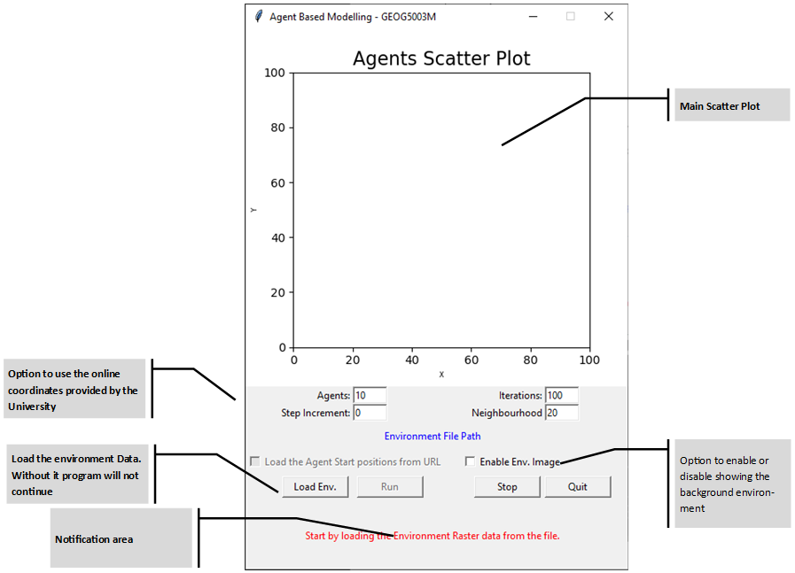
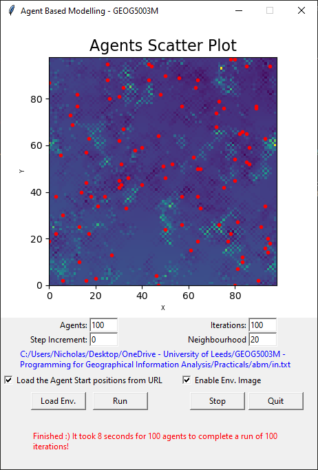

Agent Based Modelling Practical 1
Links & Dowloadables (Links open in a new Browser tab)
Link to the ABM Repository: https://github.com/nickaquilina/abm
ABM Practical Downloads: https://nickaquilina.github.io/files/abm.zip
MIT License text sourced from: https://opensource.org/licenses/MIT
This repository hosts the ABM model for Assignment 1 for the module GEOG5003M, University of Leeds. All code for the ABM was created in Python 3, using the Anaconda platform, Spyder IDE, Notepad++ and Sublime Text. All libraries used are available in the Anaconda base environment upon install. No extra packages are required.
The ABM simulates sheep (possibly cows?) moving randomly in a square 2D space. While moving, the underlying environment is also consumed. When consumption store reaches a certain level, it is again deposited to a diferent co-ordinate on the space. With the current limit set to 100, and consumption of 10 points at each move, the deposited values remain relatively close to the recent movement path of the agent, with respect to the 300x300 2D Space.
Another feature of the agents in the abm is a configurable neighbour threshold. When 2 agents are close to each other, the resources are shared by way of average.
Source Files Contained
model_gui.py
└>Model version containing a TK UI. All options are configurable via the UI, except for the verbose. That is configurable directly from the script in the form of a variable. I wanted to move that as an argument when starting the application, however, did not, due to time constraints.
agentframework.py
└>The source file contains the Agent Class for the model. This can be used by both model versions.
in.txt
└>A CSV file containing the 2D Raster resources data
out.txt
└>An updated CSV file that is the result of resource gathering and depositing during the function of the model. Note that this file is not available for download. It is automatically saved after a run.
functions.py
Other functions, also critical for the functioning of the ABM. Some functions which are still in this file should have been moved to the model source file, however I did not manage that due to time constaints.
model_cli.py
└>Model to be executed via command line. No UI is available, except for the plotting window. Being purely command line, this script uses the argparse builtin library in order to parse user input. Note that this may not be as up-to-date as the proper GUI Application, since this was there mainly for the practicals. The GUI Application is the main Application
The Application
On starting up the application, the following interface is presented:

The application is fairly easy to use. On startup, the Run button and the Load the Agent Start positions from URL functions are disabled. These become available once the environment raster is loaded. Once the environment raster is loaded, the x & y limits are also calcualted from the raster itself. These apply to the bounds of the visuals, as well as the playground limit for the agent.
When data from the Leeds University website is loaded (via the left-hand checkbox) the limits are calculated again, and are based on the largest co-ordinate within the lists. This was done so that the agents do not possibly wander around in one third of the screen. The limits also affect the Torus overflow.

One of the issues I encountered was the time taken for scatter plot display. In the cli version I was actually loadig the scatter plot only once, and then updating the changed data. This made a huge difference in performance. However, in this version, with the GUI, I am displaying the scatter plot every time. Performance is negatively affected. I do believe more than cursory knowledge of the matplotlib framework is required in order to tackle this issue, one that I will undertake in the future.
One feature that helps is the ability to switch on/off the environment image. This only affects the visuals, and the environment is still updated in the background.
The Step Increment entry controls whether the agent are increased after every iteration. This is possibly dangerous, considering that incrementing agents by 5 over 250 iterations gets the total number of agents to well over 1000. There is a hard coded limit of 10, and when this feature is in use, the agents list is not created again, but is appended to.